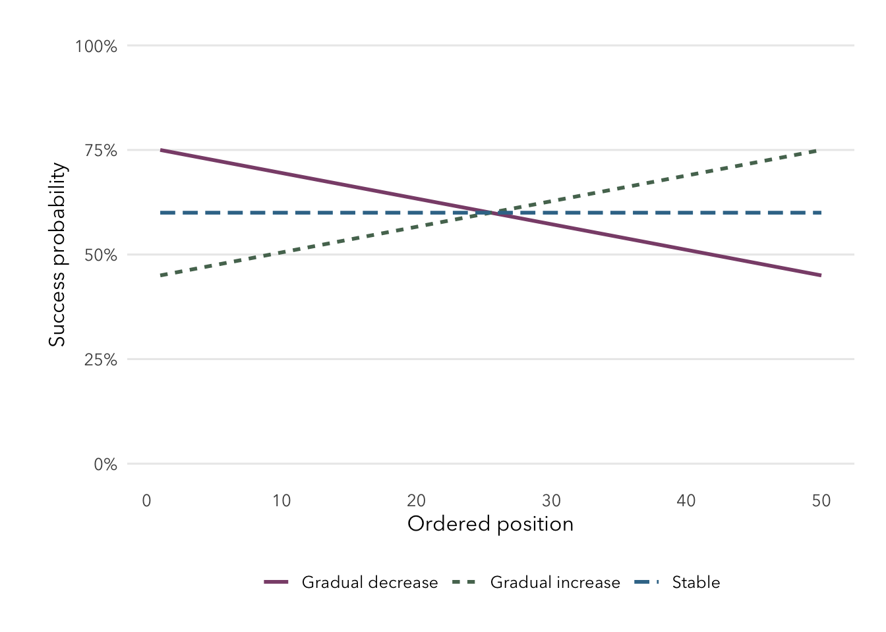
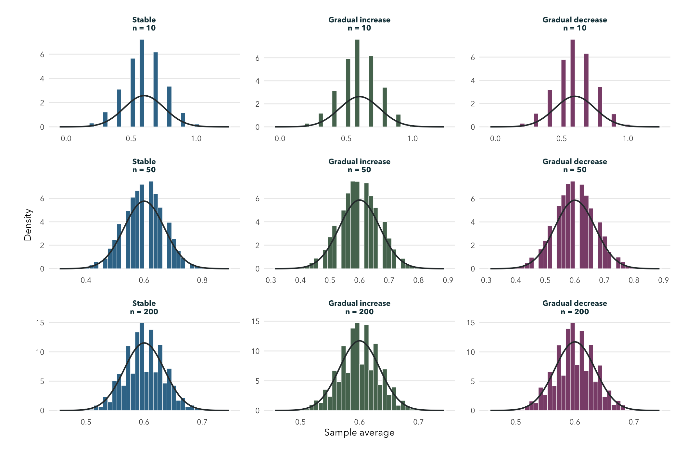

Show R code
plot_probability_paths(paths, 50)
This page is not observed cultural data and is not a validated sociological model. It does not describe or rank any named language or community. Retention and shift are not treated as inherently better or worse.
How does an average behave when stylized retention probabilities vary across ordered household or contextual positions? The purpose is mathematical: to compare equal-mean Bernoulli paths, not to explain real cultural transmission.
Each observation is Bernoulli and independent by simplifying assumption. The three paths all average 0.60:
Families and communities can influence one another, so independence is unrealistic. Education, migration, discrimination, policy, and family decisions are outside this model.
The increasing and decreasing paths contain the same probabilities in reverse order. Under independence, the distribution of their total is therefore exactly the same. Order can change the story attached to a sequence, but it cannot change this Poisson-binomial distribution.
I expected the increasing and decreasing paths to agree up to Monte Carlo noise. The changing paths should be slightly narrower than the stable path because spreading probabilities around the same mean lowers the sum of Bernoulli variances.
Static results use seed 631, 10,000 repetitions, and sample sizes from 10 through 200. The browser tool later on is supplemental and uses 3,000 deterministic repetitions for responsiveness.
shown <- page_results[page_results$n == 50, c("variant", "theoretical_mean", "theoretical_se", "simulated_mean", "simulated_se", "skewness", "qq_rmse")]
names(shown) <- c("Scenario", "Exact mean", "Exact SE", "Simulated mean", "Empirical SE", "Skewness", "Q-Q RMSE")
knitr::kable(shown, digits = 4, row.names = FALSE)| Scenario | Exact mean | Exact SE | Simulated mean | Empirical SE | Skewness | Q-Q RMSE |
|---|---|---|---|---|---|---|
| Stable | 0.6 | 0.0693 | 0.6000 | 0.0687 | -0.0690 | 0.0841 |
| Gradual increase | 0.6 | 0.0681 | 0.5999 | 0.0679 | -0.0210 | 0.0841 |
| Gradual decrease | 0.6 | 0.0681 | 0.6002 | 0.0681 | -0.0243 | 0.0837 |

Use the presets or change the endpoints and sample size. The tool uses a deterministic local generator, performs 3,000 browser simulations, and requires no network connection. Its purpose is exploration; the static figure above is the reproducible reported result.
For this stylized whole-distribution comparison, \(n=50\) is practically useful. The histograms are globally bell-shaped, skewness is modest, and the result remains stable at 75 and 100. Q-Q RMSE remains above the continuous calibration because of the Bernoulli lattice.
The model cannot explain real retention, shift, identity, or community change. Its probabilities are chosen for a mathematical comparison, not measured. Dependence, social networks, varying definitions, and unequal contexts would all matter in a real study.
Changing probabilities alter variance even when the average probability is held fixed. Reversing the same probability set does not alter the distribution under independence, which separates the mathematics of order from any real-world narrative.